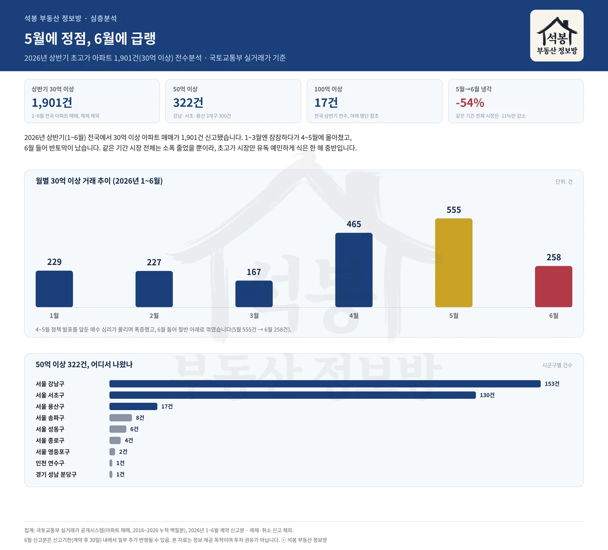
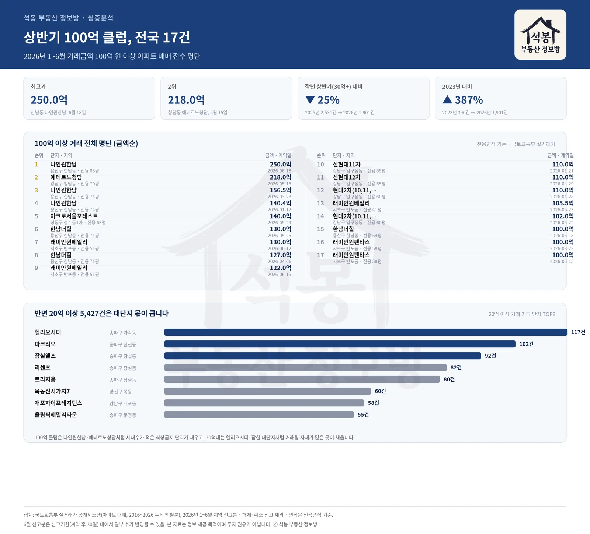

2026년 상반기(1~6월) 국토교통부 실거래가를 전부 열어 30억 원이 넘는 아파트 매매만 따로 세어봤습니다. 전국에서 1,901건이 나왔고, 그중 50억 이상이 322건, 100억 이상만 17건이었습니다. 흥미로운 건 숫자의 크기가 아니라 흐름입니다. 1분기엔 잠잠하다가 4~5월에 폭발적으로 몰렸고, 6월 들어 반토막이 났습니다. 같은 기간 전체 아파트 시장은 소폭 줄었을 뿐인데, 유독 초고가 구간만 몸을 사린 여섯 달이었습니다.
4~5월에 몰아치고, 6월에 반토막
월별로 쪼개보면 흐름이 뚜렷합니다. 1월 229건, 2월 227건, 3월 167건으로 1분기는 오히려 잠잠했습니다. 그러다 4월 465건, 5월 555건으로 두 달 연속 폭증하더니, 6월엔 258건으로 주저앉았습니다. 5월 대비 54% 줄어든 수치입니다.
같은 기간 시장 전체를 봐도 확인됩니다. 5월 전국 아파트 매매는 39,046건이었는데 6월엔 34,893건으로 11%만 줄었습니다. 초고가 구간만 다섯 배 가까운 속도로 식었다는 뜻입니다. 4~5월은 종합대책과 세제개편안 발표를 앞둔 시점이었고, 투기적 대출을 조이겠다는 신호가 여러 차례 나온 뒤였습니다. 정책 발표 전에 결정을 서두른 매수세가 4~5월에 몰렸다가, 6월 들어 관망으로 돌아섰다고 읽을 수 있는 그림입니다. 다만 6월 신고분은 계약 후 30일인 신고기한 안에서 아직 조금 더 채워질 수 있다는 점은 감안해야 합니다.
100억 클럽 17채, 한남동이 가장 많았습니다

상반기 최고가는 한남동 나인원한남 250억(전용 83평, 6월 18일)이었습니다. 2위는 청담동 에테르노청담 218억(전용 70평, 5월 15일)이었고, 3위와 4위도 다시 나인원한남이 차지했습니다(156.5억, 140.4억). 같은 단지에서 상반기에만 100억 넘는 거래가 세 번 나온 셈입니다. (🎥 나인원한남 4년 거주후기 영상 보기 · 에테르노청담 영상 보기)
17건을 지역으로 묶으면 한남동(나인원한남·한남더힐)이 6건으로 가장 많았고, 반포동(래미안원베일리·래미안원펜타스)이 5건, 압구정동(신현대11·12차, 현대2차)이 4건, 청담동(에테르노청담)과 성수동1가(아크로서울포레스트)가 각 1건씩이었습니다. 서울 안에서도 딱 다섯 동네가 100억 클럽을 나눠 가진 셈입니다.
50억 이상까지 넓혀 322건을 구별로 세면 쏠림이 더 선명해집니다. 강남구 153건, 서초구 130건으로 두 구가 전체의 88%를 차지했고, 용산구가 17건으로 뒤를 이었습니다. 강남·서초·용산 세 곳을 합치면 300건, 전체의 93%입니다. 나머지는 송파·성동·종로·영등포에 한두 자릿수씩 흩어져 있었고, 서울을 벗어난 사례는 인천 송도(더샵센트럴파크2, 59.5억)와 분당 판교(알파리움1단지, 64억) 딱 두 건뿐이었습니다. 상반기 50억짜리 아파트를 사려면 사실상 강남·서초·용산 세 곳 중 한 곳이어야 했던 셈입니다.
압구정과 반포, 그리고 성수동
압구정동은 신현대11차·12차와 현대2차가 100억 클럽에 이름을 올렸습니다. 신현대11차는 1월 110억으로 시작해 4월엔 자매 단지인 신현대12차가 같은 110억을 찍었고, 현대2차는 4월과 5월 두 차례 100억을 넘겼습니다. 재건축 기대가 실린 구축이 몸값을 유지하는 동네라는 걸 숫자로 다시 확인한 셈입니다. (🎥 압구정 신현대 신고가 영상 보기)
반포동은 래미안원베일리와 래미안원펜타스, 두 신축이 100억 클럽 다섯 자리를 차지했습니다. 래미안원베일리만 놓고 보면 5월에 105.5억 한 건, 6월에 130억과 122억 두 건이 잡혔습니다. 앞서 본 시장 전체의 6월 냉각 흐름과는 별개로, 반포 신축 대장주는 6월에도 거래가 살아 있었다는 뜻입니다. (🎥 래미안원베일리 소개 영상 보기)
성수동1가의 아크로서울포레스트는 5월 140억에 거래되며 100억 클럽 5위에 올랐습니다. 강남권이 아닌 곳에서 유일하게 이름을 올린 단지로, 서울숲과 한강을 동시에 낀 입지가 강남권 대장주들과 어깨를 나란히 하고 있다는 걸 보여줍니다. (🎥 아크로서울포레스트 영상 보기)
반면 20억대는 완전히 다른 얘기입니다
30억 이상 구간이 소수 최상급지 단지의 이야기라면, 20억 이상 5,427건으로 문턱을 낮추면 그림이 확 바뀝니다. 최다 거래 단지 1위는 송파구 가락동 헬리오시티(117건), 2위는 신천동 파크리오(102건), 3위는 잠실동 잠실엘스(92건)였습니다. 상위 8곳 중 5곳이 송파구, 그것도 잠실권 대단지였습니다.
100억 클럽이 나인원한남·에테르노청담처럼 세대수가 적은 최상급지 단지로 채워지는 반면, 20억대는 헬리오시티(9,510세대)나 잠실엘스(5,678세대)처럼 애초에 세대수 자체가 많은 곳이 거래량으로 밀어 올린 결과입니다. 같은 20억이라도 만들어지는 방식이 다른 셈입니다.
작년보다는 식었지만, 재작년보다는 여전히 뜨겁습니다
상반기 30억 이상 거래를 연도별로 나란히 놓으면 2023년 390건, 2024년 970건, 2025년 2,531건, 2026년 1,901건입니다. 2025년 대비로는 25% 줄었지만, 2023년과 비교하면 여전히 387% 많습니다. 지난해가 유독 뜨거웠던 해였고, 올해는 그보다는 한 김 식었지만 재작년이나 재재작년과 비교하면 여전히 이례적으로 활발한 수준이라는 뜻입니다. "작년만큼은 아니어도 여전히 역대급"이라는 말이 정확한 표현입니다.
정리하면
상반기 초고가 아파트 시장이 남긴 그림은 두 겹입니다. 첫째, 가격은 사상 최고인데 건수는 작년보다 줄었습니다. 250억짜리 거래가 나올 만큼 절대 가격은 역대급이지만, 30억 이상 거래 총량은 2025년 정점을 지나 조정 국면에 들어선 모습입니다. 둘째, 5월과 6월 사이에 뚜렷한 단절이 있습니다. 정책 발표를 앞두고 몰린 매수세가 5월에 정점을 찍은 뒤, 6월 들어 시장 전체보다 훨씬 빠른 속도로 식었습니다. 하반기 세제개편안과 대출 규제가 구체화되면 이 구간이 어떻게 움직일지가 다음으로 지켜볼 지점입니다.
원자료: 국토교통부 실거래가 공개시스템(아파트 매매, 2016~2026년 누적 백필분) · 2026년 1~6월 계약 신고분 전수 집계 · 해제·취소 신고 제외 · 면적과 평당 단가는 전용면적 기준 · 편집·제작: 석봉 부동산 정보방 · 본 자료는 정보 제공 목적이며 투자 권유가 아닙니다.